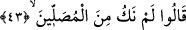
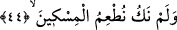

anlamına gelen “sülûk” kökünden değil girdirmek, sokmak anlamına gelen “silk”
kökündendir.
Burada şöyle bir soru akla takılabilir: “Cennetlikler onların durumlarını bildikleri
hâlde bunu onlara neden soruyorlar!” Bu soruya şöyle cevap vermek mümkündür:
“Onları azarlamak, üzmek ve Allah’ın kitabında anlatmış olduğu şeyler dinleyenlere
öğüt olsun diye soruyorlar” diyebiliriz.
43. Onlar şöyle cevap verirler: Biz namaz kılanlardan değildik,
“Onlar” günahkârlar soranlara cevap olmak üzere “derler ki: Biz namaz kılanlardan
değildik.” Yâni Allah’ın üzerimize farz kıldığı namazları edâ edenlerden değildik.
Bizim namazın farziyyetini ikrar etmeyişimiz ve onu kılmayışımız dolayısıyla sekara
girdik.
44. Yoksulu doyurmuyorduk,
Buradaki “yoksulu doyurmamak” yoksulu doyurmayı inkâra devam anlamınadır. Yoksa
yoksulu doyurmaya devamı inkâr anlamında değildir. Öte yandan âyetteki “doyurma”
vâcip olan doyurmadır; yoksa farz olmayan namaz ve yoksulu doyurma dolayısıyla -
bunlar terkedildi diye- Allah’ın azâb etmesi câiz değildir. Onlar: “Allah’ın dilediği
takdirde doyuracağı kimseleri biz mi doyuracağız?” (Yâsin, 36/47) diyorlardı. Onlar
karınlarını doyurmak sûretiyle miskin ve fakirlere merhamet etmiyorlardı -daha önce
geçtiği üzere- onların doyurulmasına teşvik de etmiyorlardı.
Âyette yer alan ifâde, cimriliği kınamakta ve kâfirlerin hesaba çekilme konusunda
dinin furûâtı/ayrıntılı hükümler konusunda muhatap olduklarına delâlet etmektedir.
et-Tavzîh’de ifâde olunduğuna göre; kâfirler îman, ukûbât/cezâlar ve muâmelât ile -
âlimlerin görüş birliği ile mükelleftirler. İbâdetlere gelince; onlar yine âlimlerin icmâî
ile âhirette hesâba çekilme noktasında ibâdetlerle yükümlüdürler. Çünkü Allah yukarda
“sizi şu sekara sokan nedir?” buyurmaktadır.
İbâdetlerin edâsının vâcipliği noktasında ise kâfirlerin mükellef olup olmadıkları
âlimler arasında ihtilaflıdır. Bizim ulemâmızdan Irak âlimleri kâfirlerin edânın
vücûbiyeti açısından mükellef olduklarını söylemişlerdir. Buna karşılık bizim
diyarımızın âlimleri buna olumsuz cevap vermişler ve kâfirlerin ibâdetleri edâ
etmelerinin vâcip olmadığını söylemişlerdir.
Bâzı tefsirlerde şöyle denmektedir: Bir Hanefi âlimi buna şöyle bir açıklama